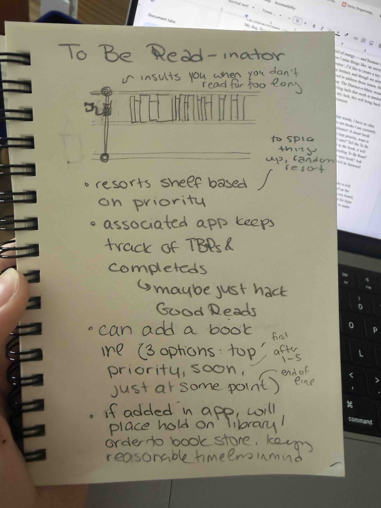
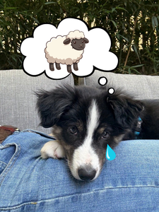
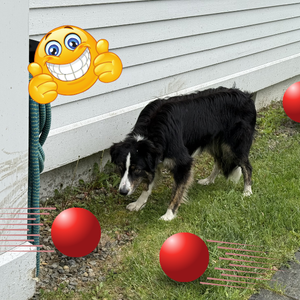
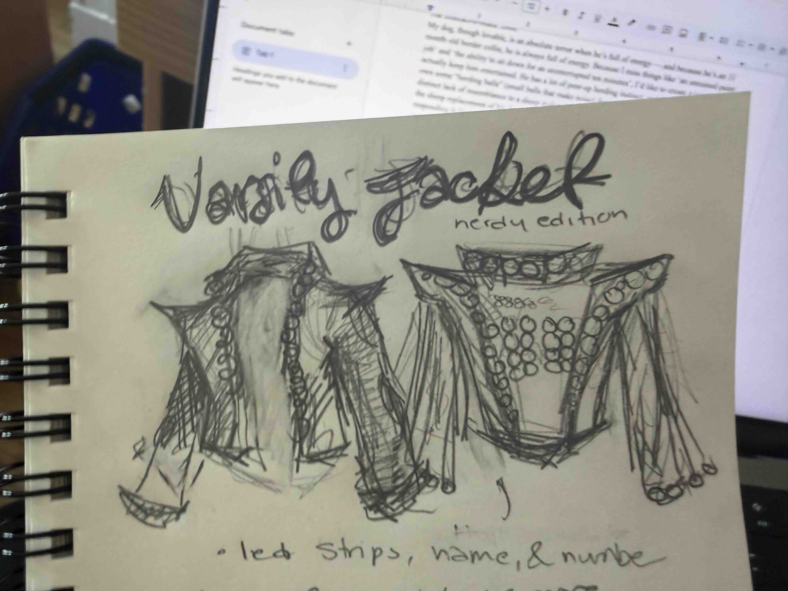

I am a reader. Worse still, I am a forgetful, busy, and lazy reader. In other words, I have no idea what is on my to be read at any given time and I keep losing track of the ten books I am currently reading in favor of other, new, shiner books. Introducing: the To Be Readinator! A smart book shelf, the To Be Readinator resorts your books based on your interest in it (top priority, want to read it soon, or just want to read whenever). Want to read a book you don’t own? Tell the To Be Readinator, and it will add it to it’s online cue — when you’re close enough to the book, it will place a hold on it at your Local Library! Feeling stressed out about your impending To Be Read? The To Be Readinator will randomly resort the shelf for you! Not feeling your next book? Ask for a rec based on genre! (And of course, if you neglect your To Be Read, you will be harassed. And, quite possibly, your friends will be notified to shame you.)
* the claw is just for dramatic effect. that's really impractical and not how this will work

My dog, though lovable, is an absolute terror when he’s full of energy — and, because he’s an 11 month old border collie, he is always full of energy. Because I miss things like ‘an unruined paint job’ and ‘the ability to sit down for an uninterrupted ten minutes’, I’d like to create a toy that will actually keep him entertained. He has a lot of pent-up herding instinct, and though we already own some “herding balls” (small balls that make noise) designed to address those issues, their distinct lack of resemblance to a sheep makes them rather boring. The Distract-o-Matic would be the sheep replacement of his dreams — a set of three, self propelling balls that work in tandem, responding to his herding while also making his job harder. With any luck, this will bring back our ability to, say, cook dinner, without a ‘bord’ toddler needing attention.


I have a slight jacket problem --- my friends make fun of me and my twenty million jackets, three of which came along despite the sticky Cambridge summers. Anyways --- This doesn’t really fit the bill, but I’d love to make a sick jacket with an LED interface. It would display the wearer’s number and name (as well as the colors of their choosing). Also, if connected to the Internet, it can act as a game-day score board, tracking points and visually announcing goals. It might also have a built in speaker, just for hype purposes. This doesn’t fit the criteria, but I think it would be really fun to own so I want to make it at some point.

I like 1 and 2 both a lot ... I might be leaning towards the bookshelf because it looks cooler, but the dog toy would help my life a lot more --- assuming it actually works from the "user" end, which isn't a guarentee. The bookshelf will need more coding, which is fine, I code, but it might be more fun to do tinkering with the ball. I have ideas for how'd I'd make both, and honestly, I'll probably wind up making each at some point so..... yeah. Thank you!